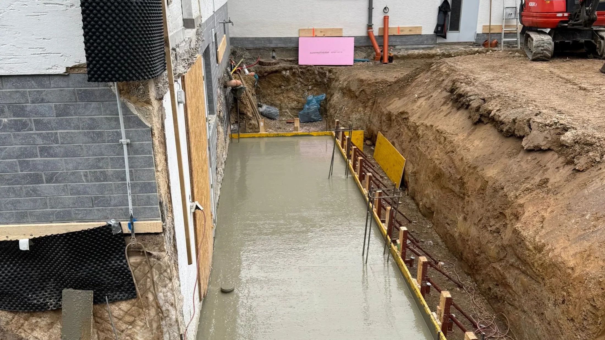

Aufgabe
Was sollte gebaut, verändert oder zurückgebaut werden?

Ausgewählte Bauvorhaben zeigen, welche Aufgaben Pfeiler Bau übernommen hat, welche Schnittstellen relevant waren und wie der vereinbarte Leistungsstand übergeben wurde.
Inhalt ansehen HochbauLeistungsmotiv · keine verifizierte Projektaufnahme
HochbauLeistungsmotiv · keine verifizierte ProjektaufnahmeFundament- und Schalungsarbeiten in einem eng getakteten Projektumfeld.
Projekt ansehen TiefbauLeistungsmotiv · keine verifizierte Projektaufnahme
TiefbauLeistungsmotiv · keine verifizierte ProjektaufnahmeErdarbeiten und Streifenfundamente für eine technische Anlage.
Projekt ansehen HochbauLeistungsmotiv · keine verifizierte Projektaufnahme
HochbauLeistungsmotiv · keine verifizierte ProjektaufnahmeBauliche Brandschutzwand im betrieblich geprägten Umfeld.
Projekt ansehen
PrivatbauLeistungsmotiv · keine verifizierte ProjektaufnahmeRohbau- und Anschlussarbeiten für eine bauliche Erweiterung.
Projekt ansehen SanierungLeistungsmotiv · keine verifizierte Projektaufnahme
SanierungLeistungsmotiv · keine verifizierte ProjektaufnahmeRückbau, Abdichtung und Wiederherstellung im Bestand.
Projekt ansehenSanierungLeistungsmotiv · keine verifizierte ProjektaufnahmeKontrollierte Rückbau- und Sanierungsarbeiten in einem sensiblen Nutzungsumfeld.
Projekt ansehenJede Referenz wird nach Aufgabe, ausgeführten Arbeiten, Randbedingungen und Übergabe eingeordnet. So lässt sich besser beurteilen, ob Erfahrung zu einem neuen Vorhaben passt.
Was sollte gebaut, verändert oder zurückgebaut werden?
Welche Zugänge, Termine, Bestände oder Nutzungen beeinflussten die Ausführung?
Welche Arbeiten übernahm Pfeiler Bau und welche Schnittstellen blieben bei anderen Beteiligten?
Welcher definierte Zustand wurde an Auftraggeber oder Folgegewerke übergeben?
Übermitteln Sie Bauaufgabe, Standort, Planungsstand, Zeitraum und vorhandene Unterlagen. Pfeiler Bau prüft daraus den sinnvollen nächsten Schritt – ohne automatische Auftragszusage.